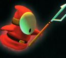

De: La Frikipedia, la enciclopedia extremadamente seria.
De: La Frikipedia, la enciclopedia extremadamente seria. De: La Frikipedia, la enciclopedia extremadamente seria.

|
FRIKIPEDIA QUIERE QUE ESTA DEFINICIÓN
PASE A SER UN ARTÍCULO FRIKIPÉDICO La información contenida en este artículo es una mínima parte de su jugo total, así que ponte los guantes, saca el tupperwere y empieza a exprimir el tema. Si lo haces serás recompensado con una galleta en almíbar y algo más. |
La historia comienza cuando luigi cree que gana una masion playboy por un concurso en el no participo a el le vale mierda no le importa porque se imaginaba como iba a estar.
Luego de llegar se da cuenta de que la mansion no es lo que esperaba(es peor que la casa deIP anónima) luego dentro encuentra a el profesor Egar.D.sastre despues de un fallo por atrapar un fantasma se va con el a su laboratorio fuera de la mansion y alli montan una orgia
luigi recibe la Poltergust 3000 o como la llama luigi la viola fantasmas.
| Imagen | Nombre | Descripcion |
|---|---|---|
|
'* El rey boo |
'*'El rey de los boo y jefe final del juego | |
|
'* Boo(comun) |
'*'El tipico fantasma de la saga mario | |
|
'* Boo(gigante) |
'*'Boo que engordo | |
|
'* Golpeador purpura |
'*'fantasma que te matara a chingadasos | |
|  |
'* Shyghul |
'*'shyguy fantasmal |
Autor(es):